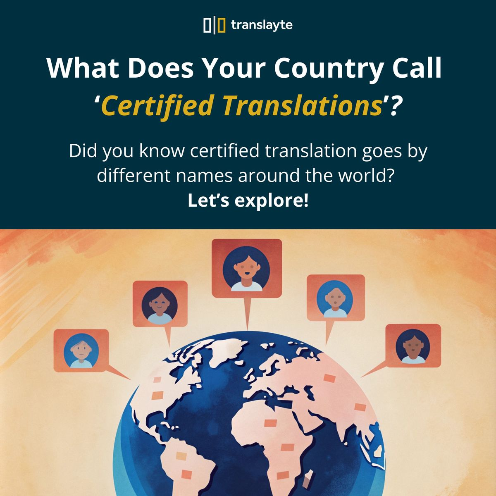

Translayte A content system for the question before the quote.
A creative direction engagement that turned certified translation into a clearer, more human social story.
The brief
A specialist service had to make sense in a feed.
Certified translation, legalisation and apostilles are important services. They are also difficult to explain in a fast social feed.
I worked with Translayte to turn those services into useful, memorable moments that earned attention before asking for a quote.
How could a specialist service earn attention before it asked for a quote?
The model
One question, one plain answer, one next step.
The content system followed the same shape in every format.
- 01 / Question
Answer the question first
Each post started with a real customer question, then used plain language and a clear example to make the service feel less intimidating.
- 02 / World
Give it a recognisable world
An editorial illustration style made a specialist subject feel familiar, while stronger openings made the first moment easier to notice.
- 03 / Action
Leave a next step
Useful education led naturally to a free quote, a service explanation or a prompt to prepare the right document.
The system
A visual language for confidence.
The system balanced authority with warmth.
Translayte's brand colours stayed visible, while editorial illustration and direct copy made the subject easier to approach.
Brand colour with room to breathe
Deep blue carried trust and structure. Cream and coral softened the subject. Gold marked important words and calls to action.
Open Sans keeps the system clear
Open Sans gave the campaign a practical typographic voice, easy to read at speed, flexible across formats and direct without feeling cold.
Illustration over stock imagery
A human, editorial illustration style gave the campaign a consistent point of view across people, places, documents and abstract ideas.
Copy that teaches and moves
Headlines carried the question. Supporting copy handled the explanation. The final line made the next action clear.
One system, many formats
The same visual logic moved between single posts, educational sequences, campaign sets and short video.
The work
A campaign built as three connected stories.
The content was organised as story sets rather than a loose collection of posts.
Each set started with a familiar customer concern, built understanding in stages and ended with a useful reason to take the next step.
Start with the life around the document
Travel preparation gave the work an easy, human entry point. The story moved from everyday practical advice to the certified documents that can make an international move possible.
- Role
- Awareness
- Designed to
- Make the need feel familiar
- Visuals
- 19

Answer the doubts before they become blockers
The educational sequence made a specialist service easier to approach by answering the questions people carry into a quote, from machine translation myths to the different names used for certified work around the world.
- Role
- Education
- Designed to
- Build confidence through clarity
- Visuals
- 14
Turn official requirements into something people can act on
The final story set explained certified translation, legalisation and apostille in practical terms, then pointed towards Translayte when the paperwork became consequential.
- Role
- Conversion
- Designed to
- Move from understanding to action
- Visuals
- 21
Motion
Two short pieces for the questions people ask.
The same educational system extended into motion.
Each piece helped people understand when certified documents need more than a standard translation.
Let's bust some myths about certified translations
Motion piece 01, 35 seconds
Why do you need legalisation?
Motion piece 02, 20 seconds
Archive
Every visual in one place.
The three story sets above carry the narrative. The archive keeps every supplied visual available for closer inspection.
Open the full asset archive
Delivery
From direction to delivery.
The value was not only in the finished posts.
It was in shaping a usable creative direction, producing a repeatable content rhythm and responding to feedback without losing the system.
Set the direction
Two illustration approaches made the creative decision tangible. The selected direction became the basis for the campaign.
Build the content
Weekly sets turned the brief into a working mix of educational posts, campaign messages and short video.
Refine in context
Client feedback improved tone, representation, logo placement and the relationship between copy and image.
The creative lesson
A complex service becomes easier to enter when the content teaches before it sells.
Good content direction makes a specialist service feel easier to enter.
The campaign gave Translayte a warmer visual world, a clearer educational voice and a practical system that could keep producing useful stories.